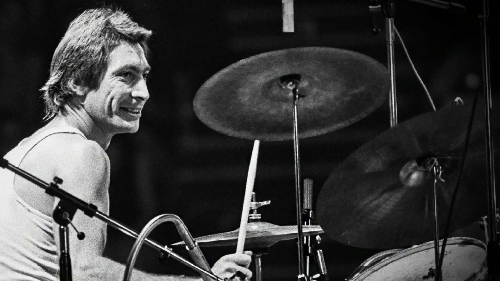

Tagged: Charlie Watts
Charlie Watts (1941–2021) + Transcription: “Midnight Rambler” — Charlie Watts with the Rolling Stones
Posted on August 29, 2021
Well, it seems by now that everyone in the music world has paid their respects to Charlie Watts after his recent passing at the age of 80. The cause of death is not known at the moment; Charlie had a recent heart procedure at the start of August, but he was otherwise reported to be in good health. Read More . . .